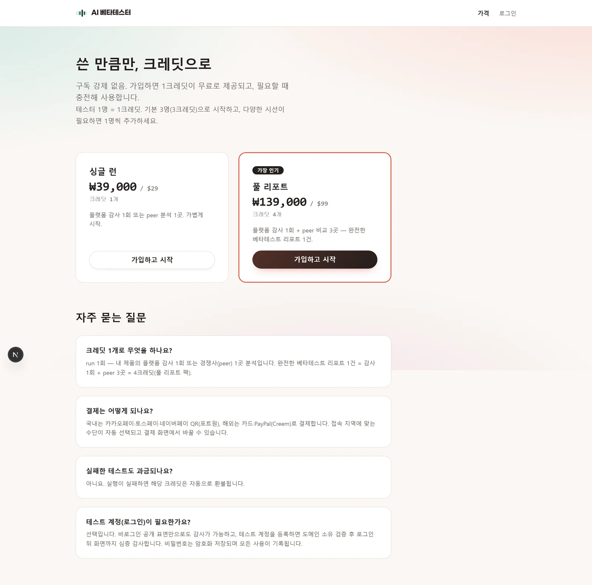
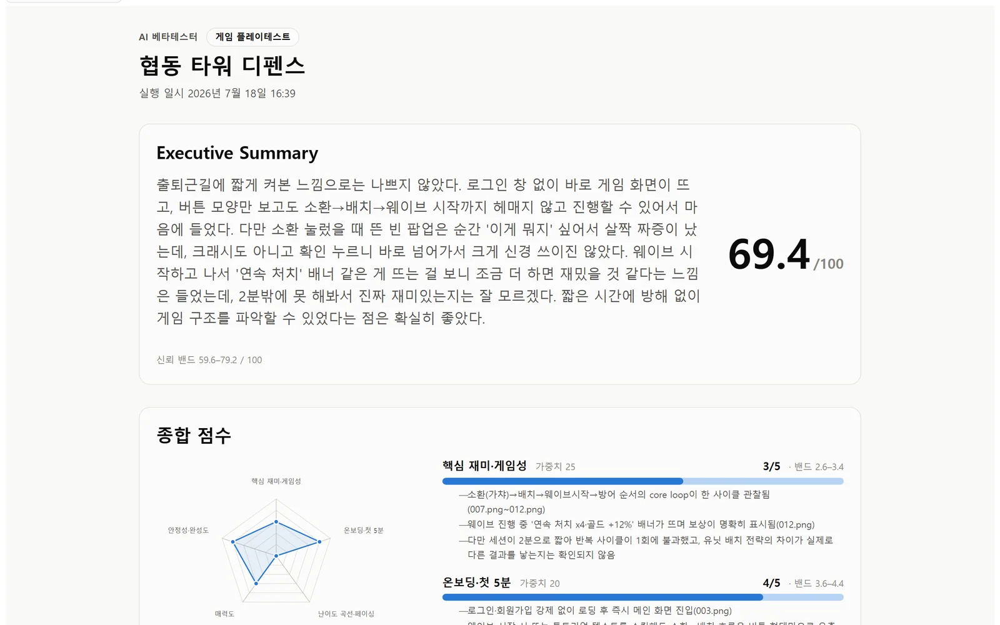
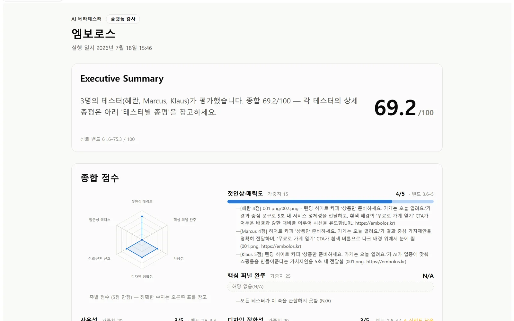
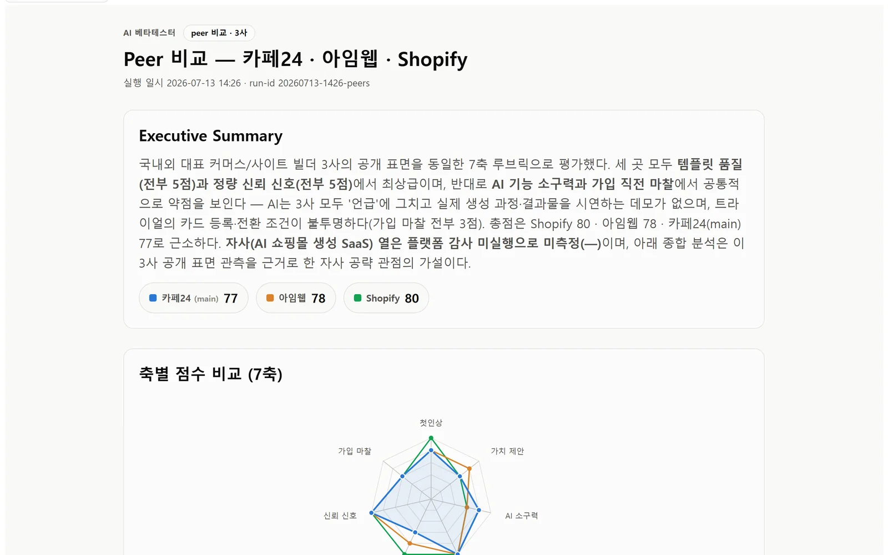
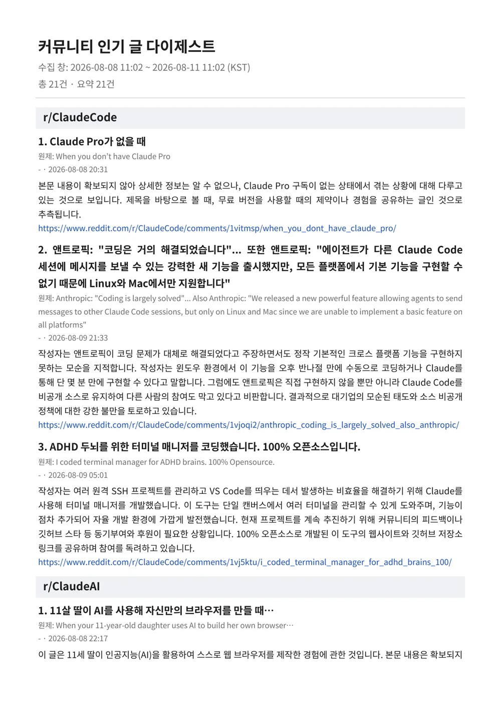
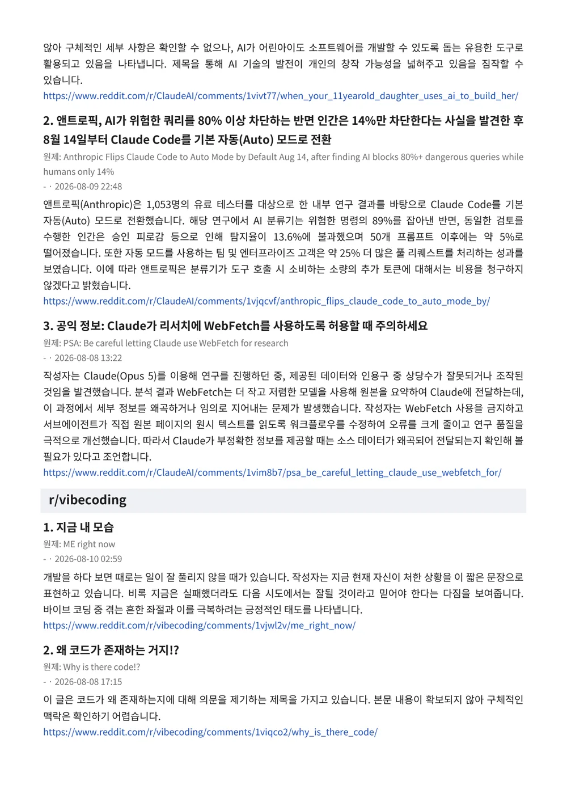

근거 없는 점수를 만들지 않는다
LLM 채점의 최대 리스크는 그럴듯한 숫자를 지어내는 것이다. 채점 규율을 별도 모듈로 분리해
관찰 인용이 없는 축은 채점 자체를 하지 않도록 강제했다. 리포트의 모든 점수에는
근거 문장과 012.png 같은 스크린샷 참조가 따라붙는다.
기획·설계·구현·운영을 혼자 끝내는 것을 기준으로 삼습니다. 아래 두 프로젝트는 모두 실제로 돌아가고 실제 산출물을 냅니다 — 이 문서의 화면과 리포트는 전부 실행 결과를 그대로 캡쳐한 것입니다.
출시 전에, 사람 대신 사람처럼 써보는 QA 에이전트. 게임과 웹 서비스를 페르소나 20명의 시선으로 직접 플레이·탐색하고, 근거가 붙은 채점 리포트를 만든다.
출시 직전 QA는 비싸고 느리다. 자동화 테스트는 “버튼이 눌리는가”는 잡아내지만 “재미가 없다 / 어디를 눌러야 할지 모르겠다”는 잡지 못한다. 그렇다고 실제 베타테스터를 모으면 모집·일정·비용이 전부 걸린다. 결국 사람의 판단이 필요한 영역이 통째로 비어 있는 채로 출시하게 된다.
나이·국가·성향이 다른 페르소나가 에뮬레이터와 브라우저에서 제품을 직접 조작하고, 축별 앵커 루브릭으로 채점한다. 모든 점수에 관찰 근거를 강제해 “왜 3점인가”가 스크린샷 단위로 추적된다. 결과는 외부 리소스 의존이 0인 자립형 HTML 리포트 한 장이다.





LLM 채점의 최대 리스크는 그럴듯한 숫자를 지어내는 것이다. 채점 규율을 별도 모듈로 분리해
관찰 인용이 없는 축은 채점 자체를 하지 않도록 강제했다. 리포트의 모든 점수에는
근거 문장과 012.png 같은 스크린샷 참조가 따라붙는다.
“69.4점”만 보여주면 정밀해 보이는 착시가 생긴다. 세션 간 의견 분산을
59.6–79.2 구간으로 함께 노출해 얼마나 확신할 수 있는 점수인지까지
읽히게 했다. 재실행 시 이전 런과의 밴드 diff도 산출한다.
API 종량 과금은 세션당 실측 $0.11–0.16. 여기에 더해 사용자의 기존 구독을 그대로 쓰는 로컬 러너 경로를 별도로 만들어, 원가 구조가 다른 두 상품을 같은 엔진 위에 올렸다.
경쟁사 분석은 경계가 분명해야 한다. robots.ts로 robots.txt를 준수하고,
peer 분석 에이전트는 계정 생성·폼 제출 없이 공개 표면만 관찰하도록 권한 자체를
제한했다.
흩어진 개발 커뮤니티의 최근 72시간을 3일마다 한국어 리포트로 묶어 PDF로 만들고 카카오톡으로 보내는 무인 파이프라인.
바이브 코딩 · Claude Code 관련 정보가 Reddit, Hacker News, 긱뉴스에 흩어져 있다. 매일 다섯 군데를 돌며 훑는 습관은 현실적으로 유지되지 않고, 한 번 놓치면 다시 따라잡을 방법이 없다.
수집 → 한국어 보고문 조립 → PDF 생성 → Drive 공개 업로드 → 카카오톡 발송을 하나의 무인 루틴으로 묶었다. GitHub Actions에서 돌기 때문에 내 PC가 꺼져 있어도 3일마다 도착한다.


cron의 */3은 “3일마다”가 아니다. day-of-month 기반이라 31일 달을 지나면 주기가 어긋난다. 그래서 매일 깨우되 epoch-day를 3으로 나눈 나머지로 실행 여부를 결정하는 게이트를 만들어, 월 경계와 무관하게 정확한 3일 간격을 유지했다.
# cron은 매일 00:00 UTC(=09:00 KST)에 깨우고, # epoch-day % 3 게이트로 3일 주기를 만든다. elif [ $(( $(date +%s) / 86400 % 3 )) -eq 0 ]; then echo "run=true" >> "$GITHUB_OUTPUT"
외부 패키지는 PDF 생성용 fpdf2 하나뿐이고 나머지는 전부 표준 라이브러리다.
무인 루틴에서 의존성은 곧 미래의 장애 지점이라, 편의보다 수명을 택했다.
수집 대상 하나가 죽어도 다이제스트는 나가야 한다. 수집기를 커뮤니티 단위로 격리해 한 곳의 장애가 전체 발송을 막지 못하게 했다. Reddit 레이트리밋은 잔여량을 감지해 백오프한다.
카카오 refresh token 만료(invalid_grant)는 무인 파이프라인이 조용히 죽는
대표 원인이다. 새 토큰 수신 시 GitHub Secret을 자동 갱신하고, 자동 갱신이 불가하면
재인증 안내를 카카오로 발송해 사람이 알아채게 만들었다.
넣을 곳뿐 아니라 제외한 곳과 그 사유까지 문서로 남겼다 — robots 차단, 로그인 벽, 무료 API 부재, ToS상 스크래핑 금지. 나중에 “왜 여긴 없지?”를 다시 조사하지 않기 위한 기록이다.
두 프로젝트에서 실제로 설계 · 구현 · 운영까지 해본 범위만 적었습니다.